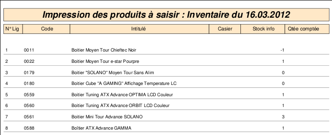
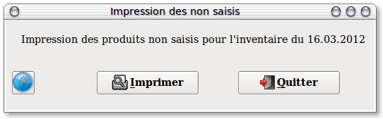
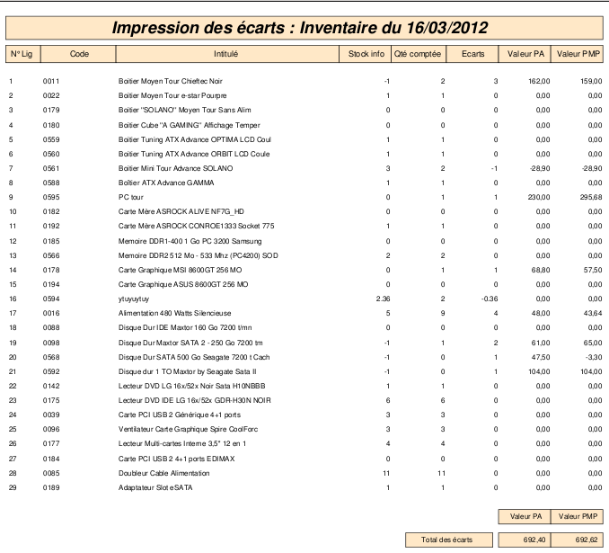
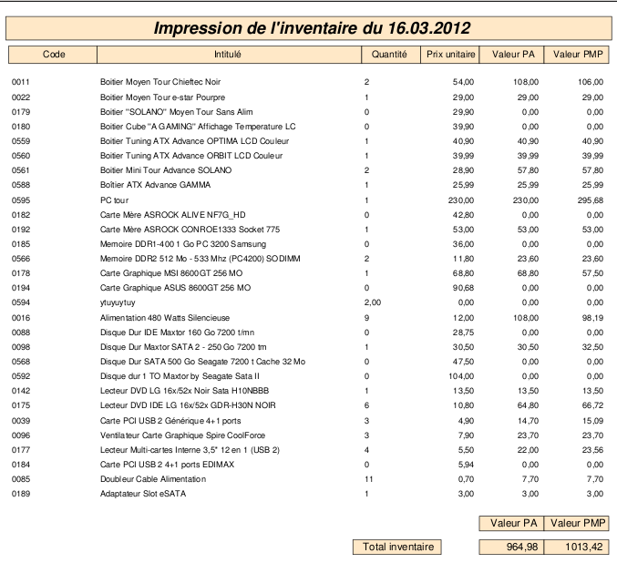

~ Comptabilité et Facturation Laurux ~

~ Comptabilité et Facturation Laurux ~ |
|
|
|

Par defaut, la date proposée est celle du jour et ne peut pas etre modifiée .
Vous
pouvez choisir l'ordre de tri de l'impression de l'inventaire, par
famille ou par fournisseur. Vous pouvez également choisir d'imprimer un
inventaire faisant apparaitre les quantités théorique du stock au jour
de la génération.
Cliquer sur le bouton "Traitement" pour lancer la génération de l'inventaire, puis cliquer sur le bouton "Imprimer" pour lancer l'impression du document qui vous servira pour la saisie.
Note. Vous pouvez initialiser l'inventaire avant ou après la date de fin d'exercice. Lors de la validation, le programme insérera dans ses calculs les quantités entrées ou sorties effectuées entre la date de l'inventaire et celle de fin d'exercice.
----------------------------------------------------------------------------------------------------------------------

L'impression effectuée apres la génération de l'inventaire se présente
selon la copie d'écran ci-dessus.Remarquer que chaque ligne est
numérotée
Vous allez donc noter sur chaque ligne de produit la quantité physique relevée puis saisir ces quantités sur votre informatique.

----------------------------------------------------------------------------------------------------------------------

Une seule opération pour imprimer les non saisis. Cliquez sur le bouton "Imprimer".

Vous aurez une impression semblable à cette copie d'écran.
----------------------------------------------------------------------------------------------------------------------

Une seule opération pour imprimer les écarts. Cliquez sur le bouton "Imprimer".

Vous aurez une impression semblable à cette copie d'écran.
----------------------------------------------------------------------------------------------------------------------

Une seule opération pour imprimer l'inventaire chiffré. Cliquez sur le bouton "Imprimer".

Vous aurez une impression semblable à cette copie d'écran.
----------------------------------------------------------------------------------------------------------------------

Pour valider l'inventaire, déterminez d'abord ce que vous souhaitez faire des non saisis puis cliquez sur le bouton "Imprimer".
----------------------------------------------------------------------------------------------------------------------